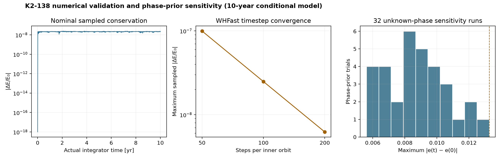
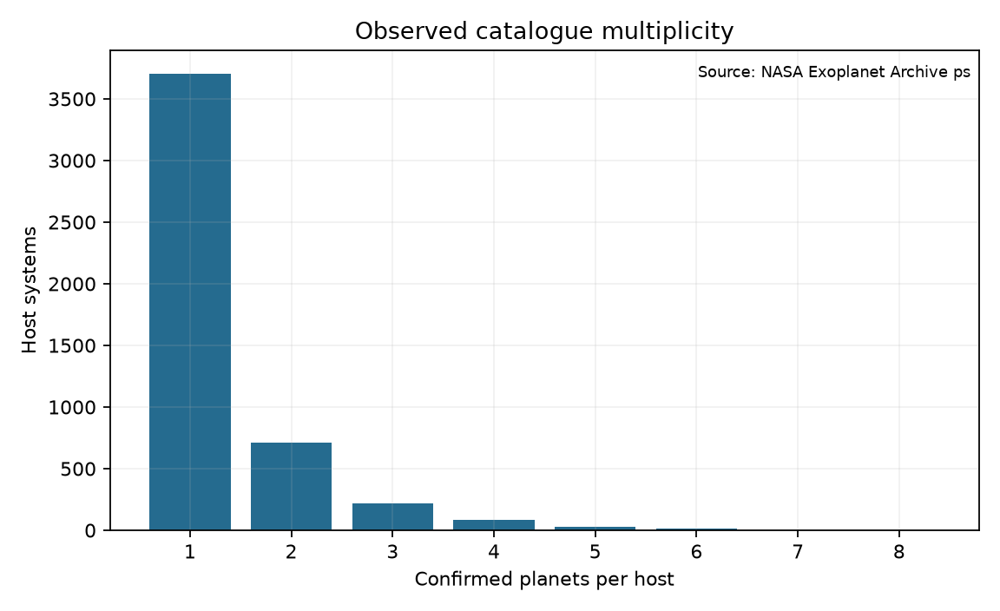

Project data sources
SHA-256, LF-normalised text
9f00e5fbb20696fc5d3bc79b6b62c281c6800cf9eb78f29ec05255bc99bb1375Browse 17 versioned evidence files. Table previews simply display stored rows. Consult the project report for the source, processing steps, and inference assumptions.


9f00e5fbb20696fc5d3bc79b6b62c281c6800cf9eb78f29ec05255bc99bb1375d33da7b37030a60864f23bd887e7e4cfd94e85bdabd9a2013cae362124eac23bcc8ba8ad22f9fe4c8609b4f601aeea0b4e9545490375c50461c92b4e25f8929c73a696741815d516d8fa0813e4cd21afb28201d0e65a30351631d3e295925b59| trial | seed | mean_anomalies_deg | max_eccentricity | max_eccentricity_excursion | delta_E_over_E | delta_L_over_L |
|---|---|---|---|---|---|---|
| 0 | 20261004 | {"K2-138 b": 17.65331338922479, "K2-138 c": 146.2887315536643, "K2-138 d": 224.26623585984424, "K2-138 e": 335.86795743037237, ... | 0.07725951744494808 | 0.008054886636983283 | 8.873366680589532e-09 | 3.4483462307480326e-14 |
| 1 | 20261004 | {"K2-138 b": 92.12961818802214, "K2-138 c": 344.2971810467854, "K2-138 d": 352.19225997981806, "K2-138 e": 332.9638087896771, "... | 0.07826854416727586 | 0.006525424662583448 | 4.062668874331423e-09 | 3.4335464615173554e-14 |
| 2 | 20261004 | {"K2-138 b": 162.7663104193615, "K2-138 c": 83.7620154657887, "K2-138 d": 16.91181097368608, "K2-138 e": 301.75684561012105, "K... | 0.07700599358740484 | 0.013260552822034498 | 5.5924278482142e-09 | 1.7019734615279983e-14 |
| 3 | 20261004 | {"K2-138 b": 31.51086014237416, "K2-138 c": 321.16096219851215, "K2-138 d": 260.99375489145945, "K2-138 e": 272.26030450244525,... | 0.07849426216809872 | 0.006715054953248381 | 5.268052518264387e-09 | 1.5539757692212162e-14 |
cfab97fb18a7211633681565295e2139d3972df2b036e1868b4a2442d457e77876bf216b2bbb3638b79c6f2cef2651a9aa95c80455c3d8b0b9495c1dbf6ce0717f5b33f06161e71473b3f31b83bc777fa896573154d060e0d522f527b86994c1cc8ba8ad22f9fe4c8609b4f601aeea0b4e9545490375c50461c92b4e25f8929c73a696741815d516d8fa0813e4cd21afb28201d0e65a30351631d3e295925b59af92b080a4ad20d563435bcb49dfdb91ad8b3987e683838eb58e9dad972e6452| trial | seed | mean_anomalies_deg | max_eccentricity | max_eccentricity_excursion | delta_E_over_E | delta_L_over_L |
|---|---|---|---|---|---|---|
| 0 | 20261004 | {"K2-138 b": 17.65331338922479, "K2-138 c": 146.2887315536643, "K2-138 d": 224.26623585984424, "K2-138 e": 335.86795743037237, ... | 0.07725951744494808 | 0.008054886636983283 | 8.873366680589532e-09 | 3.4483462307480326e-14 |
| 1 | 20261004 | {"K2-138 b": 92.12961818802214, "K2-138 c": 344.2971810467854, "K2-138 d": 352.19225997981806, "K2-138 e": 332.9638087896771, "... | 0.07826854416727586 | 0.006525424662583448 | 4.062668874331423e-09 | 3.4335464615173554e-14 |
| 2 | 20261004 | {"K2-138 b": 162.7663104193615, "K2-138 c": 83.7620154657887, "K2-138 d": 16.91181097368608, "K2-138 e": 301.75684561012105, "K... | 0.07700599358740484 | 0.013260552822034498 | 5.5924278482142e-09 | 1.7019734615279983e-14 |
| 3 | 20261004 | {"K2-138 b": 31.51086014237416, "K2-138 c": 321.16096219851215, "K2-138 d": 260.99375489145945, "K2-138 e": 272.26030450244525,... | 0.07849426216809872 | 0.006715054953248381 | 5.268052518264387e-09 | 1.5539757692212162e-14 |
cfab97fb18a7211633681565295e2139d3972df2b036e1868b4a2442d457e778cf409a374535eb465fa1d3ddfb6a927c4e49679e20c61f604263c6b77f6af1e3| canonical_system_id | canonical_host | n_planets | multiplicity_class | has_periods | has_masses | has_radii |
|---|---|---|---|---|---|---|
| k2-138-9b597f96 | K2-138 | 6 | high_multiplicity | True | True | True |
| kepler-11-a804d45d | Kepler-11 | 6 | high_multiplicity | True | True | True |
| hd-23472-e86bae32 | HD 23472 | 5 | five_plus_planet | True | True | True |
| kepler-102-24032780 | Kepler-102 | 5 | five_plus_planet | True | True | True |
4a169e4c04e7943aedcea70c550a23308a85d84a674cc2414f049388eec2dfe1de5b261cd7a920828f7680bfd6bc694e2339debc287c5fb382de015f17446294d32be78477f39b03827ba1c99f6a107c3f4ba355cfc70b9d04c02d6e5011a3e6e2196e6209df3593a6349a59a8141f7b3b30b325c5a7c1fdc1931cdd3a06edbf4f9c3453b234db615ba1f03e8b6657c7b50afb9e26fb71c039d06a1b69c40296SHA-256 values verify the stored files. They do not independently validate the scientific analysis. Rebuild this page with python scripts/evidence_catalog.py followed by python scripts/render_evidence_page.py.